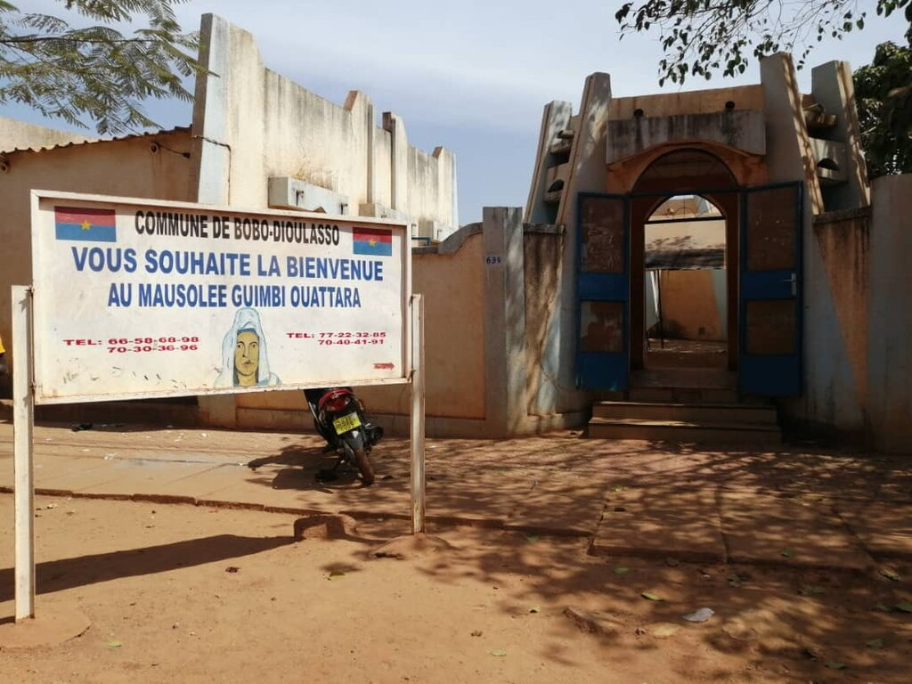
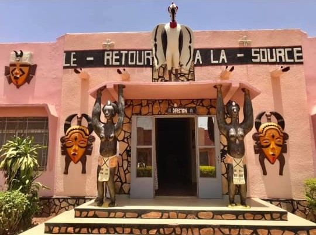

Grande Mosquée de DioulassobâMusée Sogossira Sanon

Mausolée Princesse Guimbi OuattaraVillage ArtisanalCathédrale Notre Dame de LourdesBassins Sacrés de Dafra

Centre Culturel Sénoufo René FournierForêt du Kou (Guinguette)Vieux Marché de Bobo-DioulassoMausolée Tiéfô Amoro